Explorador de variables#
The Variable Explorer allows you to interactively browse and manage the data and objects created by your code.
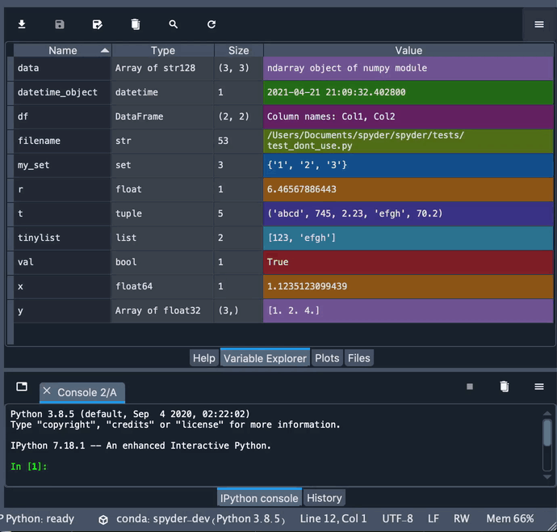
It shows the namespace contents (including all global objects, variables, class instances and more) of the currently selected Terminal de IPython session, and allows you to add, remove, and edit their values through a variety of GUI-based editors.
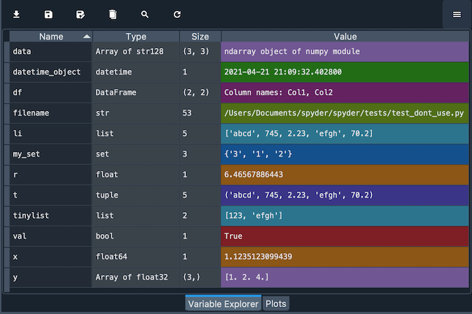
El Explorador de variables te proporciona información sobre el nombre, tamaño, tipo y valor de cada objeto. Para modificar una variable escalar, como un número, cadena o booleano, simplemente haz doble clic en el panel y escribe su nuevo valor.
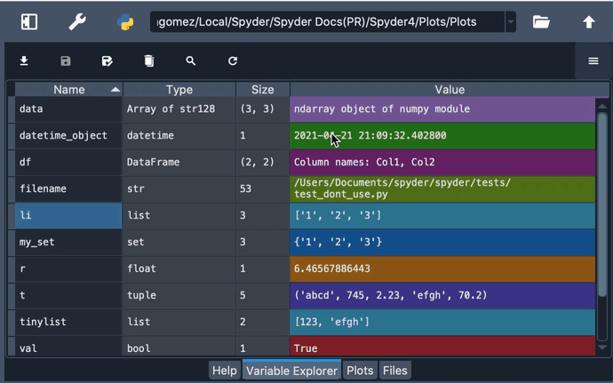
Visor de objetos#
The Variable Explorer offers built in support for viewing and editing lists, strings, dictionaries, NumPy arrays, Pandas DataFrames, Series and more; as well as being able to plot and visualize them with one click.
Every viewer has a refresh button, which updates the displayed object to the current value of the variable in the Console if it has changed in the meantime.
Click any column to sort the table by it in ascending or descending order, and if the object is editable you can double-click any cell to change its value, which will open a new viewer if that object isn’t a basic scalar data type (e.g. int, float, string).
Cadenas de texto#
When a string variable is longer than forty characters, you can double-click it to see its value in a text editor to modify it more easily.

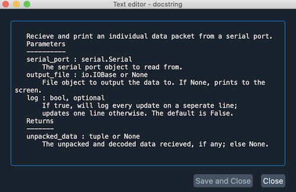
Diccionarios#
Double-clicking on dictionaries will show a viewer displaying each of its keys with its associated value. The Toolbar buttons allow you to insert, duplicate and remove individual key-value pairs and adjust the row and column width, as well as view the dictionary as a generic object.

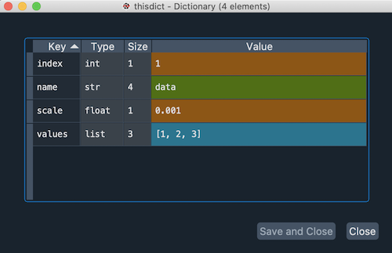
Listas#
For lists, the main Variable Explorer pane displays a preview of the first ten values. To see them all, double click the list to open a viewer that will display the index, type, size and value of each element of the list. Just like dictionaries, you can double-click values to edit them, and use the toolbar to insert, duplicate or delete elements, along with options to resize and open in the object explorer.

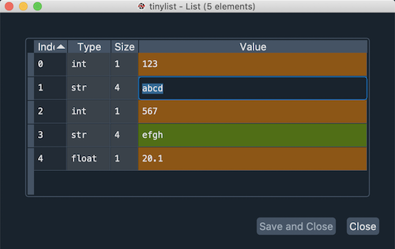
NumPy arrays#
Like lists, for NumPy arrays the Variable Explorer shows a preview of their values. Double-clicking them will open a viewer displaying the array values in a «heat map», with each value in a grid cell colored based on its numeric quantity. You can deactivate this by selecting the Use default background color option in the Display options dialog under the viewer options («hamburger») menu in the top right. To improve performance, the background heatmap will be turned off automatically if the array is very large.
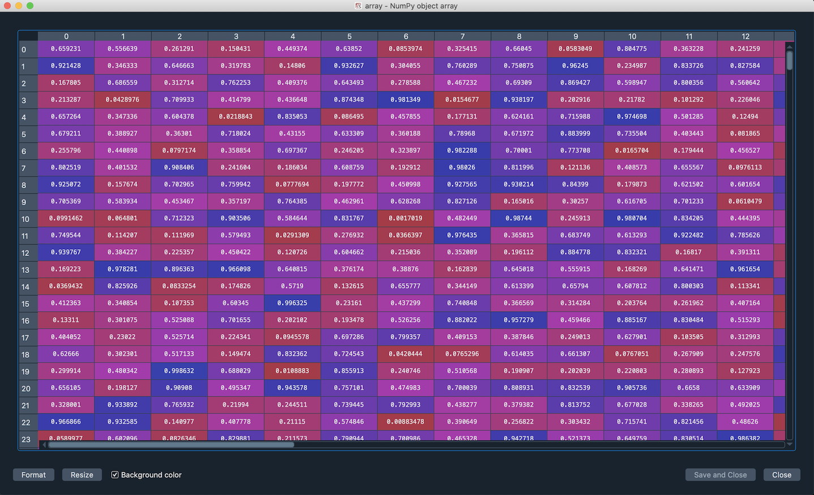
You can manually adjust the size of the rows and columns of the array by expanding or contracting their headers. Clicking the resize button on the right of the dialog toolbar will set the widths automatically.
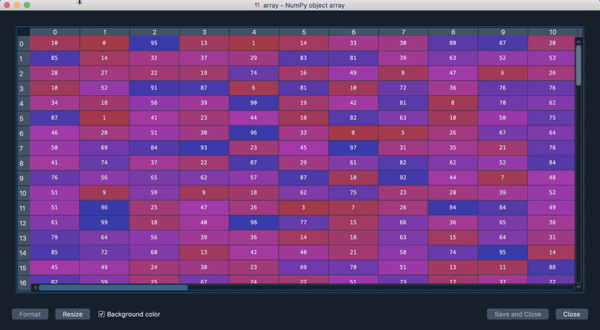
If supported by the datatype, you can also change the format of the array’s values, choosing the number of decimals that you want the array to display. For this, enter the desired format string (using Python’s standard format specification mini-language) under Formatting in the Display options dialog under the viewer options («hamburger») menu in the top right.
DataFrames#
DataFrames, like NumPy arrays, display in a viewer where you can change the format, resize the rows and columns either manually or automatically and show or hide «heatmap» colors, with an added option for making the heatmap global or per-column.
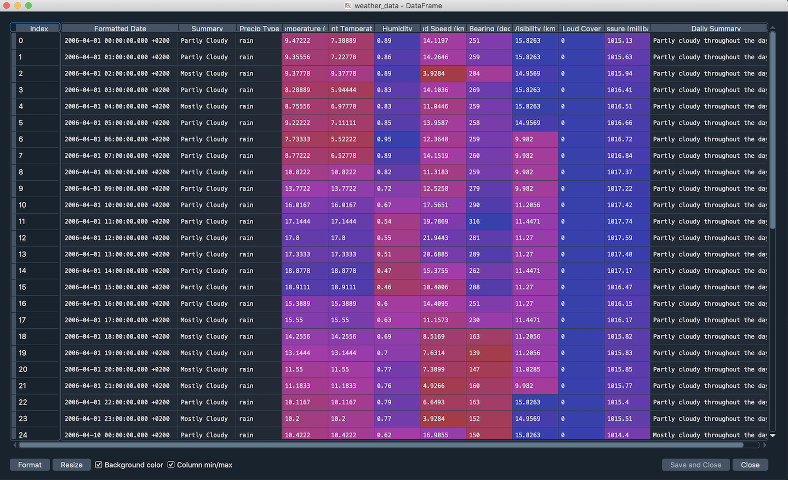
Additionally, toolbar buttons allow inserting, duplicating or deleting both rows and columns, and plotting a histogram of the selected columns.
The Variable Explorer has MultiIndex support in its DataFrame inspector, including for multi-level and multi-dimensional indices.
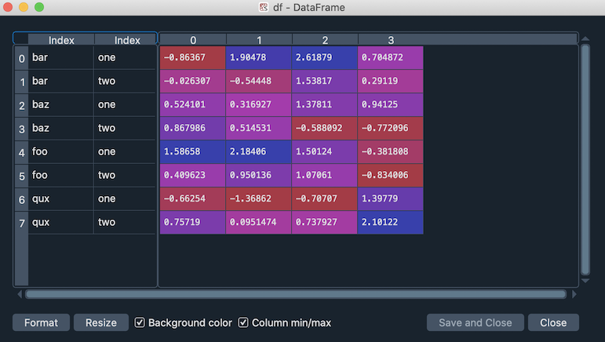

Importing and exporting#
The Variable Explorer’s toolbar includes several useful features to import, export and manage variables and data.
The Import data button can be used to load a variety of types of data files, including JOSN, NumPy, Matlab, CSV, images, Python pickles and HDF5.
The Save data and Save data as buttons allows saving the current session as a .spydata file, which can be loaded later with the Import data button to restore the saved variables to your active session.
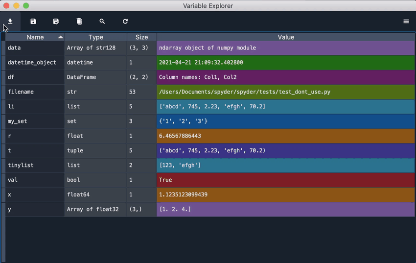
Advertencia
No debes cargar ningún archivo .spydata desde cualquier fuente en la que no confíes (idealmente, solo aquellos archivos que hayas guardado tu mismp). Al igual que con cualquier Python pickle, no es inherentemente seguro contra código malicioso, ya que puede cargar cualquier objeto Python y puede ejecutar código arbitrario en tu máquina. Además, no se garantiza que funcione de forma fiable en todos los entornos de Python que no sean en aquel en el que se creó, por lo que sólo debería utilizarse como formato de persistencia local, y no para intercambio.
The trash button allows removing all displayed variables, and the search button allows finding objects by name or type.
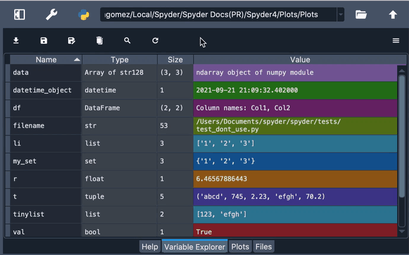
Finally, the refresh updates the Variable Explorer’s contents to show the current state of the code running in the Terminal de IPython.
Funcionalidad avanzada#
The context menu, available by right-clicking any variable, provides numerous additional options to interact with objects of various types. These include renaming, removing or editing existing variables, as well as a Duplicate option to create a new copy of one of them under a new name.
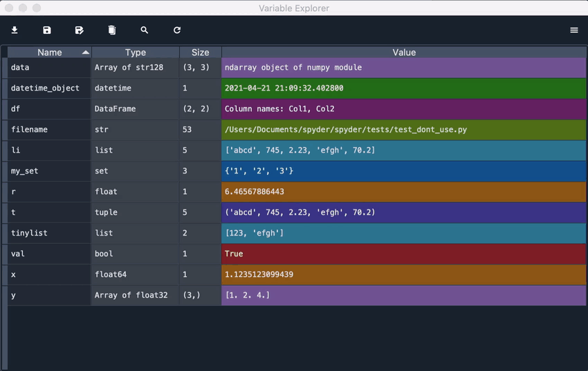
Además, puedes copiar y pegar el valor de una variable, guardándola en el Explorador de variables con el nombre que elijas. Esto te permite cambiar el tipo de variable que estás pegando, lo que puede ser muy útil. Por ejemplo, te permite copiar fácilmente los elementos de una lista en una matriz.
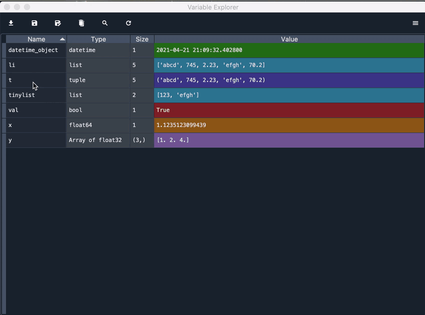
Additionally, you can create an object from scratch directly in the Variable Explorer with the Insert option, which allows you to type the key and the value for the item that you want to insert. This feature also allows you to create a new key in a dictionary, a new element in a list, and much more.
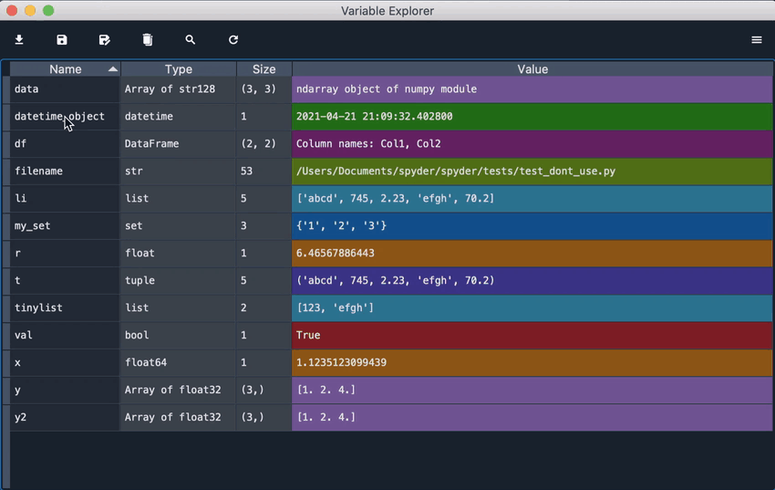
For lists and NumPy arrays, more advanced options are available, including generating plots and histograms of their values appropriate to their type and dimensions.
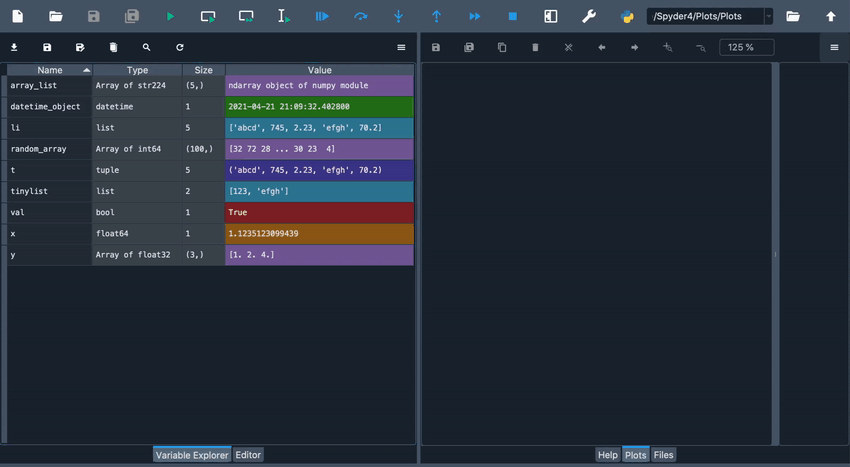
You can save an array to a .npy file by clicking the appropriate option, which can later be loaded in the Variable Explorer via Import data or in your code via numpy.load().

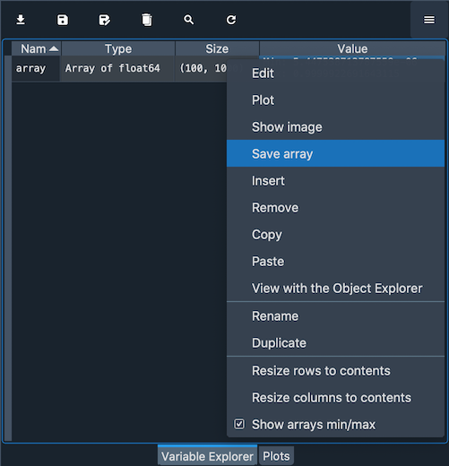
En el caso de arreglos bidimensionales, también puedes mostrarlos como imágenes, tratando sus valores como colores RGB. Para esto, Spyder utiliza los mapas de colores de Matplotlib, que pueden ser fácilmente cambiados para que coincidan con tus preferencias.
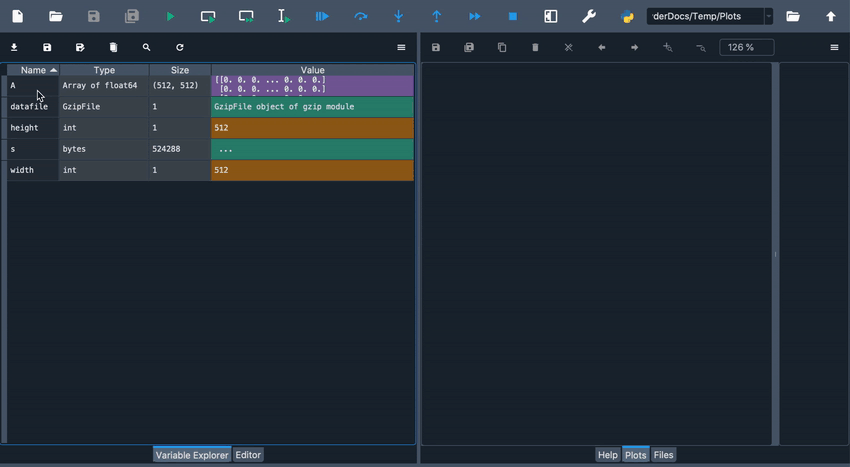
Finally, there is a context-menu action to open any object using the Object Explorer even if they already have a builtin viewer (DataFrames, arrays, etc), allowing for deeper inspection of the inner workings of these data types.
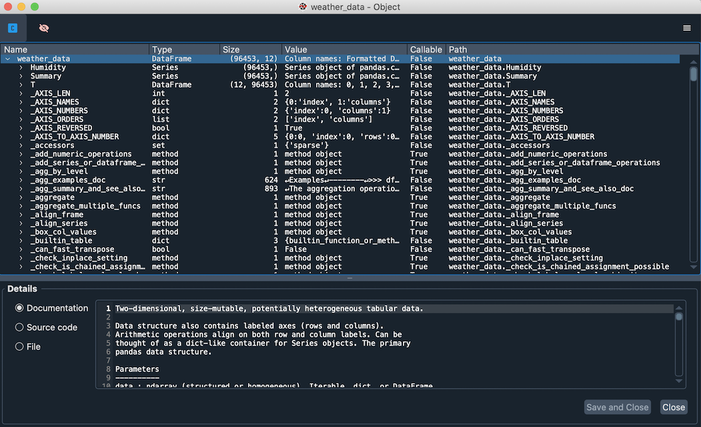